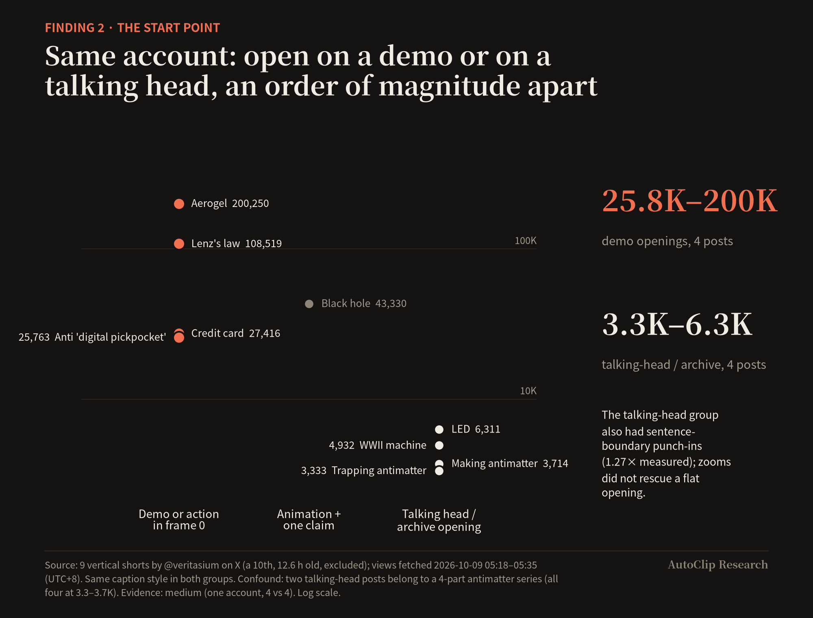
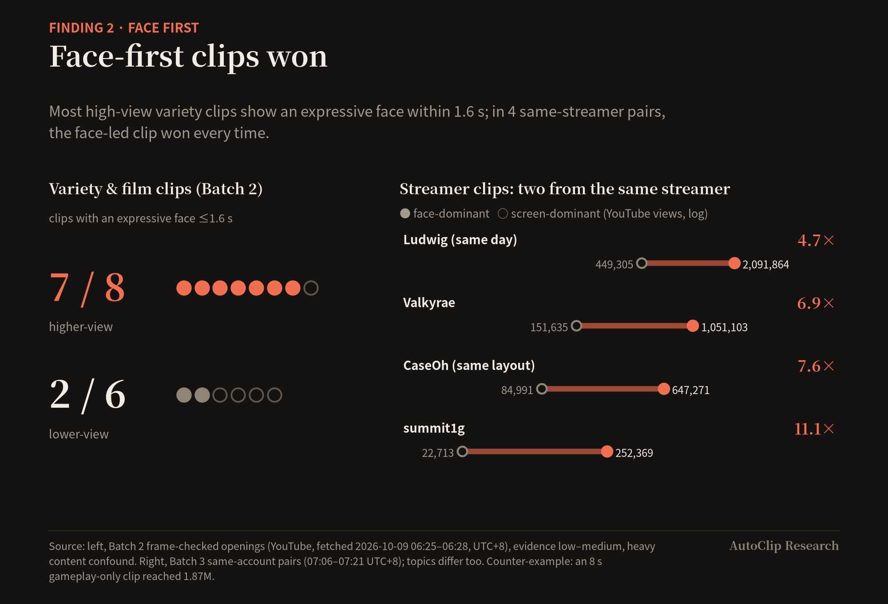
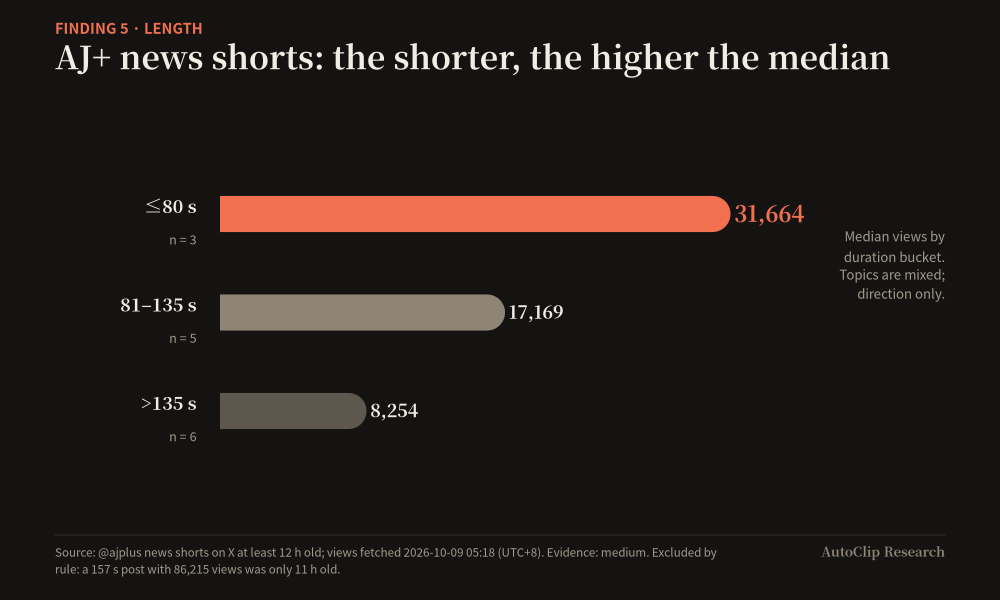
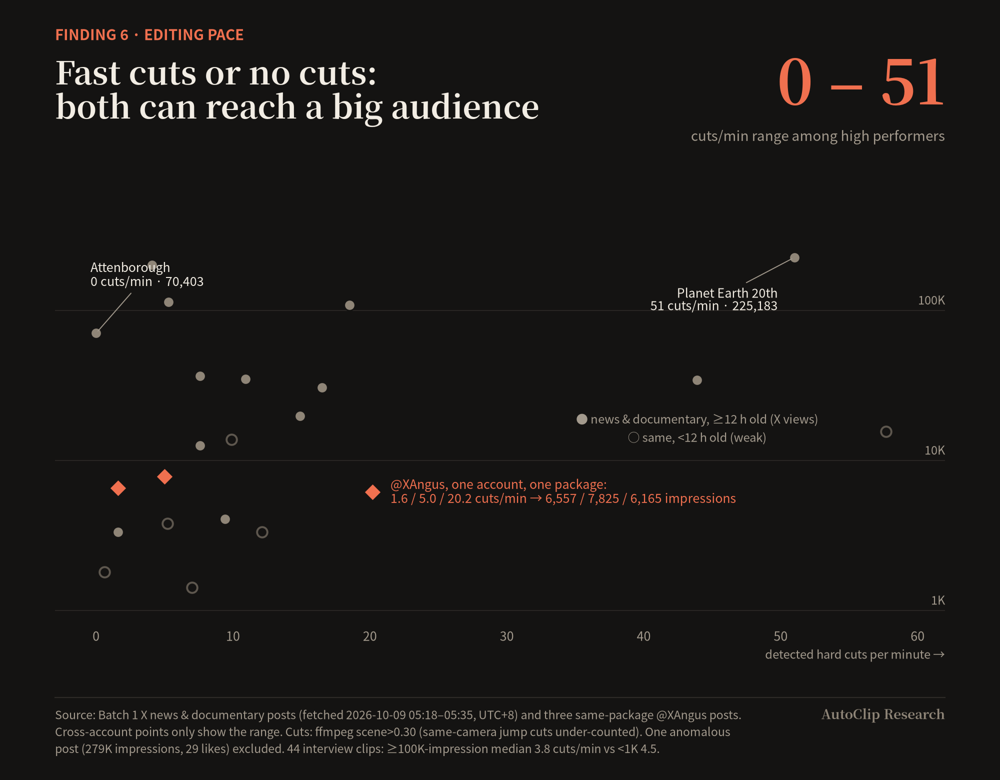
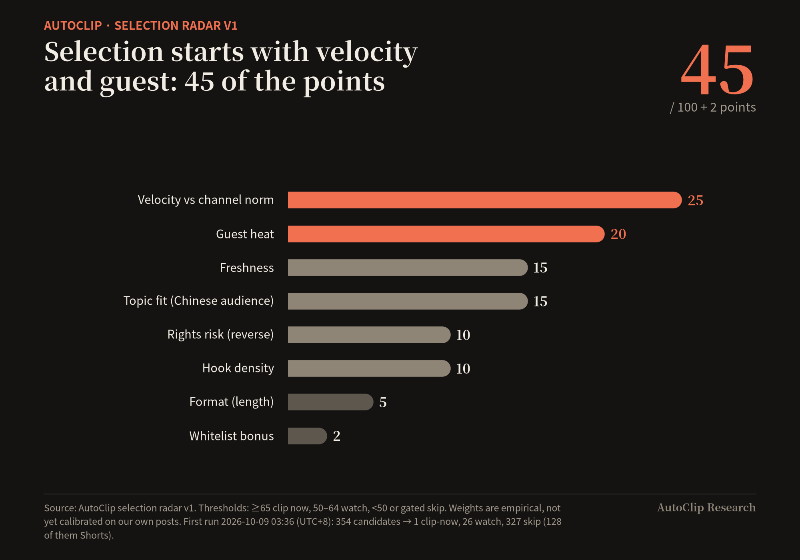

Pick the moment, not the effect: what 158 short clips taught us about what drives views
AutoClip Research Note #1 · 9 October 2026 · 中文版
TL;DR. We logged 158 public short clips from six content groups (interview/podcast, news, documentary, variety/film, gaming/live, vlog/editorial), then compared high and low performers within the same account. One pattern held across groups: who or what is in the clip, and where the clip starts, predicted views far better than how it was edited. GQ posted 2,823,259-view and 6,261-view Shorts in one identical template. HasanAbi's four clips in one template ranged 8–12×. Cut rate, zooms, stylised captions (花字), stickers, sound effects, grading and templates showed up in hits and flops alike. So AutoClip is putting its effort into input selection and start-point/quote detection. We treat packaging as a quality floor plus brand taste, not as a growth lever. Everything below is a snapshot of public metrics taken on 2026-10-09 (UTC+8). We have no data from our own account yet, and we list what we plan to A/B test.
1. Why we did this
AutoClip is an open-source tool that cuts long videos (interviews, podcasts, talks) into short clips (github.com/zhouxiaoka/autoclip). Every clipping tool, ours included, is tempted to compete on effects: auto-zooms, animated captions, emoji, sound effects, templates. These are easy to demo and to screenshot.
Before we spent another quarter on templates, we wanted to know which of those things actually move views, and which are just craft: what competent channels do whether or not a clip takes off. This note covers what we found, how we found it, what we changed, and what we still don't know.
Who this is for: creators and clip-account operators deciding where to spend editing time, and developers building clipping tools.
2. Data and method
2.1 What we sampled
| Group | Platform(s) | Posts logged | Metrics fetched (2026-10-09, UTC+8) |
|---|---|---|---|
| Interview / podcast clips, including design-forward accounts (WIRED, Vogue, a16z, Colin and Samir, Sixth Tone, 歸藏) | X | 57 (+5 noted, not tabled) | ~03:30, 04:18, 05:05, 06:30, 07:16–07:19 |
| News shorts + documentary/science explainers | X | 22 in the main tables (+ extra same-account posts for the Veritasium and AJ+ comparisons) | 05:18–05:35 |
| Variety + film clips (Chinese, Korean, Japanese) | YouTube Shorts, X | 26 (3 metadata-only) | YouTube 06:25–06:28; X 05:50–05:53 |
| Gaming + livestream facecam clips | YouTube Shorts | 25 (7 more downloads voided, see §8) | 07:06–07:21 |
| Vlog + magazine/editorial | YouTube Shorts (2 long videos, first 90 s only) | 28 | 07:33–07:47 |
| Total | 158 |
All metrics are snapshots at fetch time and keep changing. Interview/podcast data came from X's read-only endpoints. Video files were public MP4s (video.twimg.com) or public YouTube pages read with yt-dlp, with no cookies, proxies, logins or paid scrapers. Where a platform blocked us, we stopped and recorded it rather than working around it (§8).
2.2 Evidence hygiene: how we tried not to fool ourselves
Account size swamps everything else. In the cleanest case we found, the same video with the same caption got 141,835 impressions on one account and 386 on another: about 367×. Comparing packaging across accounts is therefore meaningless, and we used these rules:

- 1. Same account only. Packaging effects are claimed only from contrasts within one account, ideally the same template, same day or adjacent days.
- 2. Post age ≥ 12 h. Younger posts are still growing. Posts 1–5 h old are marked as weak contrasts and kept out of conclusions.
- 3. Like-rate filter. On X, a post with likes/impressions < 0.05% is treated as anomalous (likely paid or algorithmic outliers). One 60 Minutes clip had 279,085 impressions and 29 likes, so we excluded it. On YouTube, a post whose like rate is under half the account's other posts, or which carries a sponsor banner, is flagged ⚠ and used for technique only. This excluded MBC's high-view clips (0.10–0.20% like rate vs 0.21–0.45%), NOWNESS and Hypebeast.
- 4. Metric semantics. X
view_countmerges views when a video is reused, and X impressions and views are not comparable. We never mix them in one comparison. - 5. Practice ≠ effect. "High performers do X" is recorded as practice. We only call something an effect when it differs between high and low posts within an account.
- 6. Measurements we trust, and ones we don't. Duration and cuts come from ffprobe/ffmpeg scene detection (threshold 0.30 for X videos; 0.22 on the in-frame content region for variety). Same-camera jump cuts are under-counted. Loudness comes from
ebur128, pauses fromsilencedetect(−45 dB, 0.25 s). Zoom factors are quoted only when we verified them frame by frame (the automatic estimates were too noisy). Background music was inferred from pause counts, never listened to.
Evidence strength labels used throughout:
- High: ≥3 independent accounts agree.
- Medium: a same-account contrast, or 2 accounts.
- Low: a single example, or inference.
2.3 Terms used in this note
- Thumbnail overview: a grid of stills taken from a video at fixed intervals, so a whole clip can be scanned at a glance.
- Impressions vs views: on X, impressions count how often a post was shown; views count video plays. The two are not comparable. On YouTube we only use views.
- Like rate: likes ÷ impressions (or views).
- In-point: the second of the source video where a clip starts.
- Cut rate: shot changes per minute.
- Punch-in / pull-out: enlarging the frame (e.g. 1.27×) or returning to the wide shot, to mimic a camera change.
- B-roll: supporting footage (an object, a place) shown while the speaker's audio continues.
- 花字 (stylised captions): outlined, stickered or animated captions common in Chinese variety shows.
- LUFS / dBTP: units for loudness and peak level. Platforms usually normalise to about −14 LUFS; peaks ≤ −1 dBTP avoid clipping.
- Black level p1: brightness (0–255) of the darkest 1% of pixels; a high value means greyish, "faded" blacks.
- J-cut: the next shot's audio starts before its picture.
- Sandwich layout: a vertical frame with a title bar on top, the 16:9 video in the middle and a brand bar below.
3. Findings: what predicts views
Finding 1 — Same template, wildly different outcomes (High)

- GQ "10 Essentials" (identical set, table, captions and product inserts): 2,823,259 and 1,306,890 views vs 6,261–8,562, which is 330–450×. The difference is the guest's fame and the topic.
- HasanAbi, same template: 1,340,613 / 1,293,987 vs 111,361 / 175,004, about 8–12×. The difference is topic and the segment chosen.
- Vogue cover behind-the-scenes, same day, same template: 233,704 vs 26,142 (8.9×). Different cover star.
- TBS's VIVANT drama clips, identical template: 691,440 vs 88,565 (7.8×). A tense monologue and confrontation vs a warm family scene. This is the cleanest "packaging constant, content decides" pair we found.
- Chinese variety channels on YouTube showed 28–600× gaps between same-account posts on the same day.
- The same pattern shows up on X, with same-package pairs at a16z 4.7× (same session, same day), Sixth Tone 16× and Colin and Samir 3.7× (impressions). In each of these pairs, and in a fourth from WIRED, the higher post had the more concrete hook (Finding 3).
If one template produces both a 2.8M-view clip and a 6K-view clip, the template is not what decides the outcome.


Finding 2 — The start point: a face or a visible event in the first ~1.5 s (Medium)

- Veritasium (same account, identical caption style): shorts that open on a physical demo or action in frame 0 got 25.8K–200K views; talking-head or archive openings got 3.3K–6.3K. The talking-head group also had sentence-boundary punch-ins (1.27×, frame-verified), so zooms did not rescue a flat opening. Confound: two talking-head posts belong to a 4-part antimatter series on an abstract topic.
- Variety/film (Batch 2): among frame-checked openings, 7 of 8 higher-view clips showed an expressive face within 1.6 s, vs 2 of 6 lower-view clips.
- Streamer clips (Batch 3): in four same-account pairs with different layouts, the face-dominant clip beat the screen-dominant one each time: Ludwig 4.7× (same day), Valkyrae 6.9×, CaseOh 7.6× (same layout, footage switched from game to people), summit1g 11×. Topics also differ, and an 8-second gameplay-only clip still reached 1.87M.



The first 1.5 seconds are mostly decided when the in-point is chosen, not in the edit. An editor can't add a reaction that isn't in the footage.
Finding 3 — Specific titles name a person plus a concrete act or number (Low–Medium, consistent direction)
- iQIYI SuperShow, same template: a title naming a person and what they did (「话痨#布瑞吉 虚心接受 但不一定改~」) got 109,826 views. Abstract slogans (「锋芒留给舞台 尊重留给对手」) got 1,541 / 1,735. Duration is confounded here (22 s vs 96 s).
- Keep Running (奔跑吧), same day, same template: 「宋雨琦这几句给我钓成翘嘴」 (named person, internet idiom) got 189,795; the subject-less exclamation 「人怎么能闯这么大的祸」 got 6,848.
- 60 Minutes, same guest, same package, all three posted within 33 minutes: the clip framed as an enumeration ("three kinds of jobs") got 36,396 views / 165 saves, vs 21,900 / 69 and 14,373 / 52 for the other two. Its post copy opened with the question "What does AI mean for your job?"
- WIRED, same template: a playful claim had a 4× higher like rate than a suspense question. Colin and Samir: an actionable contrarian claim ("content calendars are actually bad") had 3.7× the impressions of a generic aphorism.
- Numbers help when they are the payoff. 有吉の壁's age-reveal clip (「40歳」) reached 3,407,645, and only 1 of the 12 low-view variety titles contained a number. That pair is weak because the posts differ in age.


A diagnostic we didn't expect: low-view clips often have higher like rates (Keep Running low 3.5–3.9% vs high 1.2–1.5%; iQIYI low 1.8% vs high 0.7%). Our reading is that they reached only existing fans and never broke out to strangers. A title that relies on fan context stays in the fan circle.
The post copy is half the packaging on X. 20VC's clip with the contestable opening line "Every seed investment is an option bet." drew 283,526 impressions and 66 quote posts. Same-account clips with long, claim-free quotes drew 15–17K impressions.
Finding 4 — A self-contained line beats context-dependent ones (Low–Medium)
The high performers usually contain one line that works with no setup: a number, a contrast, a one-sentence answer. Rick Owens on Dazed, asked "What do you look for in your models?", answers "I just choose weirdos." (255,579 views; 17 s, street Q&A with almost no cuts). Veritasium's lowest-performing opening began "One of the first experiments that was done…", which needs prior context to make sense. This is a selection-layer signal. You can't add it in the edit.

Finding 5 — Shorter by default, with a clear exception (Medium)

- AJ+: ≤80 s median 31,664 (n=3); 81–135 s 17,169 (n=5); >135 s 8,254 (n=6). Topics are mixed.
- iQIYI: 22 s / 27 s clips got 109,826 / 29,245; 95–96 s clips got 1,541 / 1,735.
- On X interview accounts, the low performers in two same-account pairs were both >200 s (TBPN 224 s vs 85 s; WOLF 247 s vs 90 s).
- Exception: HasanAbi's 78 s and 180 s clips both reached ~1.3M in the same template, and CaseOh's 133–136 s clips reached 412K–647K. When the material is a continuous argument or continuous laughter, 60–180 s works. Long, fully subtitled episodes can also work on X for curator accounts with an established audience (one 27-minute bilingual cut got 77,329 impressions, ~10× that account's short clips). Our default is still ≤90 s.

Finding 6 — Packaging techniques are craft, used by hits and flops alike (High for "no consistent effect")

| Technique | What we saw |
|---|---|
| Cut rate | High performers range from 0 cuts/min (Attenborough, 70,403) to 51/min (Planet Earth 20th, 225,183). In 44 interview clips, the ≥100K-impression group had a median 3.8 cuts/min and the <1K group 4.5. One account with one package: 1.6, 5.0 and 20.2 cuts/min → 6,557, 7,825 and 6,165 impressions. Dazed's top street interviews have 0–4 cuts. |
| Punch-ins / zooms | Practice is near-universal (60 Minutes 1.30×, Veritasium 1.27×, WSJ 1.45×, frame-verified), but Veritasium's low performers have them too. |
| 花字 / stylised captions, stickers | Mango TV's 2,089-view clip had stylised text labels just like its 399,479-view sibling. |
| Sound-effect density | Our transient-density proxy pointed in opposite directions across pairs (HasanAbi high 89.6/min vs low 128.5; Jynxzi high 112 vs low 40). |
| Loudness | −8.4 to −31.2 LUFS among streamer clips. The higher clip was louder in 4 pairs and quieter in 3. Both extremes are mistakes, though (see the floor in §5). |
| Grading | One Vogue same-day pair: deep blacks (p1 = 1.6) 233,704 vs lifted, faded blacks (p1 = 49.6) 26,142. Different cover star, so this is an observation only. |
| Templates / layouts | See Finding 1. The "sandwich" layout (title bar + 16:9 + brand bar) is used by both 3.4M-view and low-view clips. |


What packaging does do: it decides whether an account looks like it has taste and a consistent identity, and it plausibly affects likes and saves. Design-forward accounts with a fixed type system had high save rates (歸藏's "AI 早报": 5.4 saves per 1,000 impressions; Colin and Samir's concept animation: 9.5). We value that. It just isn't where reach comes from.
4. What this means for AutoClip
Thesis: for a clipping tool, the highest-leverage decisions come before the edit: which video, which moment, which first second, which title. Packaging should be a reliable floor that never embarrasses the creator, plus a few tasteful looks. It is not where we compete.
What we're doing about it (status as of this note):
| Area | What | Status |
|---|---|---|
| Input selection | "Selection radar" v1 scores candidate long videos on 7 dimensions and gates out Shorts, <8-min videos, >30-day-old videos, suspected re-uploads and dead videos (Figure 6). | v1 built; first run 2026-10-09 03:36: 354 candidates → 1 "clip now", 26 "watch", 327 skipped (128 of them Shorts). Weights are empirical, not yet calibrated on our own posts. |
| Start point | Pick in-points at a visual or emotional peak (gesture, laugh, prop, reaction) within ±3 s of the candidate start, so a face or event is visible by ~1.2–1.5 s. End on a reaction. | Rule adopted. Our templates already open on a full-screen face at frame 0. Automatic peak-frame in-point selection is not built yet. |
| Quote / self-contained line | Radar "hook density" counts numbers, claim words and story signals per 1,000 transcript words. Enumeration/framework sentences get a bonus. | Density scoring written. It falls back to title/description when transcripts can't be fetched from server IPs. Enumeration bonus is proposed. |
| Titles and post copy | Two-line title: setup line + "who + concrete act/number". Post copy line 1 = the most contestable verbatim line. Every claim must be traceable to the speaker's words. | Implemented in our packaging prototype, with a mandatory human read. Drafts only; nothing is auto-posted. |
| Packaging | Treated as a floor: loudness, face-safe overlays, A/V sync, sharp 1080p source, short or no end card. Plus a small set of distinct looks so accounts don't get visually fatigued. | Implemented as automatic checks before a clip is delivered. |

5. The top-10 packaging techniques we kept (with parameters)
These are ordered by expected impact, and the top of the list is mostly about selection and copy. Parameters for items 1–4 and 7 are implementation suggestions inferred from verified frames. They are not measured from the originals.
| # | Technique | Parameters | Evidence |
|---|---|---|---|
| 1 | In-point at the peak | An expressive face or the first word of the key line within 0–1.5 s; the payoff line may come first, then the context. Hold the final reaction 1.0–2.5 s. | Medium (Veritasium 4 vs 4; variety 7/8 vs 2/6) |
| 2 | Specific title bar | Line 1: setup or quote, ≤10 CJK characters, 0.75× size, accent colour. Line 2: person + concrete act, contrast or number, ≤14 characters, weight 800–900. Magazine templates use a serif headline instead. | Low–Medium |
| 3 | Question-card opening | The host's real question, or a real comment, in italics at 0–2.3 s; the answer in roman. Never invented. | Low |
| 4 | Number reveal + roll | Only numbers the speaker says. Blur-in 0.2 s → roll 0.5–0.7 s (easeOutExpo + motion blur) → serif numerals at 2.0–2.4×, held 2.5–3.5 s. | Low–Medium |
| 5 | Step punch-in + reaction pull-out | Hard switch 1.00 ↔ 1.22–1.28 at sentence boundaries; emphasis ≤1.45×, ≤3 per clip. Pull back to 1.0× on a physical reaction and hold ≥1.5 s. | Practice High / effect unproven (hygiene) |
| 6 | Emphasis-word type contrast | Magazine look: one serif-italic word per sentence, 1.15–1.3×, accent colour, ≤1 per 3 s. Entertainment look: 1.7–2.0× enlargement. | Practice (3 accounts) |
| 7 | Multi-speaker captions | One fixed colour per speaker. An interrupted line stays greyed at 45–55% opacity. In fast exchanges, cut on every speaker change, shots 0.4–1.5 s. | Low–Medium (single same-day pair) |
| 8 | Object B-roll under continuous dialogue | 1.5–3.0 s, in and out on word boundaries, voice uninterrupted; ≤2 per 20 s; never covers the main face for long. | Hygiene |
| 9 | Enumeration beat cards | ≤6 characters per item, thin weight or wide-tracked caps with large thin numerals, one punch-in each; a 1.2 s summary card at the end. | Medium for the selection signal (60 Minutes); the card visual is an extrapolation |
| 10 | Technical floor | −14 LUFS ±1, true peak ≤ −1 dBTP; no digital silence in pauses (p10 ≥ −45 dBFS); one LUT per template, black level p1 ≤ 10/255; no brand end card ≥2 s. | Technical spec |
Two reasons for the floor in #10: streamer clips ranged from −8.4 to −31.2 LUFS with no relationship to views (platforms normalise loudness anyway), and Peter McKinnon's podcast clips at −29.5 / −28.6 LUFS with true silence in pauses were his account's weakest format (25,422 / 32,694 vs 248,442 for a talking-head clip; topic confounded).
Visual examples, one figure per technique
Stills from the posts we analysed, captured at low resolution. Coral bar and number = the higher post or the example to follow; taupe = the lower post or what to avoid; dark grey = context. Metrics are the snapshot values from sources.md.


What not to copy
- Controversy as a growth engine. A Vox clip got 113,451 views but only 48 likes, against 275 replies and 144 quotes. The reach came from people objecting, which is a brand risk for a personal account.
- Speculation hooks that aren't in the quote, such as captions that guess at a speaker's mental state.
- Fake urgency: "JUST IN / 刚刚 / BREAKING", countdowns, a "LIVE" bug on a recorded interview.
- Invented comments, danmaku or questions, or other platforms' comment screenshots that carry real usernames.
- Third-party footage and brand assets: broadcaster logos, show bugs, news photos, archive footage, other channels' fonts and corner marks. Learn the structure, not the identity.
- Mastering extremes: −7 to −10 LUFS "loud" masters, or −29 to −33 LUFS quiet ones.
- Dead-air endings: 5-second black brand end cards.
- Faded, lifted-black grading (~50/255) as a default.
- Effects past saturation: more than 2 crash zooms or white flashes per clip; stylised text on every line; cartoon flames; VHS-grain montages at 120+ cuts/min on talk content.
- Hiding the face until the reveal. In interviews, the face is the content.
- A 16:9 frame floating in empty black bars. (A "sandwich" whose bars carry the title and branding is fine.)
- Over-long cuts (>135 s) unless the material is a continuous argument or continuous laughter.
- Data from suspected paid boosts (anomalously low like rate, sponsor banners), as evidence of anything.

6. What four rounds of our own templates taught us about packaging
We repackaged the same three clips from one public interview (Jensen Huang on the Dwarkesh Podcast, published 2026-04-15) through four template rounds on 2026-10-09. One lesson per round. R0: the biggest visual gain came from the source, not the design. Re-sourcing in 1080p with face-tracked framing took the face from 16% to 25% of the frame width, made it 3.3× sharper, and removed the "small window" feel. R1: captions and cards were placed around the face; we added a persistent "who + claim" topic pill, a loop ending and a real B-roll cutaway, and stopped dimming the first second. R2: "no overlay ever touches the face" became a hard rule, and we learned that protecting the face must not cost the zoom rhythm that keeps a talking head alive. R3: every hook and subtitle now has to be exactly as strong as the speaker's words, never stronger; and we added two design-forward looks with a fixed type system (2 font roles, 1 accent colour, a fixed grid), "Editorial" and "Cinema". Across all four rounds the lesson matched the findings above: the moment and the words carry the clip; packaging works best as a reliable floor plus one consistent look. Full thumbnail overviews of each round are in the appendix (stills only).
7. Open hypotheses we will test on our own clip account
None of the following has been tested yet. Method: ≥8 matched pairs per hypothesis, cut from the same episode and posted in the same time slot, alternating which version goes first within ≤48 h. One variable at a time. We read views at 48 h post age, 3-second retention / average watch time, like rate and save rate.
| ID | Hypothesis | A | B | Primary metric | Priority |
|---|---|---|---|---|---|
| H11 | A specific title beats a slogan title | slogan | person + concrete act/number | views, clicks | 1 |
| H14 | Payoff line first | chronological | 1.5 s cold open on the payoff → context | average watch time | 1 |
| H13 | A magazine look doesn't cost views and raises saves | creator look (heavy stroke, yellow emphasis) | Editorial look | save and like rate (win = no significant view drop) | 2 |
| H17 | Podcast clips improve once they meet the technical floor | multicam + plain white captions | + full floor (loudness, room tone, title, emphasis) | views, 3 s retention | 3 |
| H12 | Question-card opening beats a plain caption opening | plain | host's real question in italics, 0–2.3 s | 3 s retention | 4 |
| H10 | J-cut visual cold open beats a talking-head start | face at 0 s | 0–1.2 s B-roll under original audio → cut to face | 3 s retention | later |
| H15 | A calm single-shot editorial cut is no worse than step punch-ins | punch-ins | 0–2 punch-ins + italic Q/A | average watch time | later |
| H16 | Rolling numbers beat static numbers | static | roll | retention 3 s after the number | later |
| H18 | Duration: same segment at ≤45 s vs 60–90 s | long | short | completion, views | later |
Render pairs already prepared (stills in Figure 7): card density 1 per 8 s vs 1 per 15–18 s; end on the face (freeze + push + paper band) vs a 0.5 s loop back to frame 0; one payoff replay vs none; new Editorial/Cinema looks vs the R2 templates with the same clip and the same hook.

We'll publish the results either way.
8. Limitations
- English-heavy sample. The interview, news and documentary sets are mostly English-language X accounts. Chinese coverage comes from official variety channels on YouTube, a few X accounts (歸藏, 投机实验室, 宝玉, Sixth Tone), and Chinese design media that post little or no video on X.
- Douyin, Weibo and Xiaohongshu were not sampled. Douyin returned an anti-bot JavaScript challenge, Weibo returned 403/302, and Bilibili's creator pages and video endpoints returned 412 or risk-control errors (its "popular" feed was readable as metadata only). We did not bypass any of these. Film-commentary (影视解说) clips have no usable sample.
- Big-account and topic confounds. Same-account contrasts remove account size but not guest fame, topic, timing or post age. Most accounts contribute only 2–4 posts, so we have no account-level medians. Comparing the extremes within an account overstates the typical spread.
- Snapshots. All metrics were fetched on 2026-10-09 between ~03:30 and 07:47 (UTC+8) and will have changed. Post ages differ between pairs, and some pairs carry an explicit post-age confound (marked weak).
- Measurement limits. Background music was inferred from pause detection and sound effects were not listened to. Zooms were spot-verified, not measured clip-wide. Several analyses ran on 480p downloads. J-cuts vs L-cuts, speed ramps and match cuts could not be verified. Colours are approximate.
- Our own mistakes. In the gaming batch, an ID mapping file was overwritten, so 7 early downloads could not be traced back to their posts. They were voided and are not used anywhere.
- No data from our own account yet. Every recommendation about our templates is a hypothesis until §7 runs.
- We build the tool we're writing about. Read our implications with that in mind. The data files are listed in
sources.mdso you can check them.
9. Open questions
- 1. Packaging seems to shape how an account looks more than how far a clip travels. Does it measurably move saves and follows, which matter for an account over time?
- 2. Can a self-contained line be detected from a transcript well enough to choose in-points automatically? What's the false-positive cost?
- 3. Is the low-view/high-like-rate pattern a dependable early signal of a clip that stayed inside the fan base?
- 4. Where does the "continuous argument or laughter" exception to "shorter is better" begin and end?
- 5. Do Douyin, Bilibili and Xiaohongshu follow the same pattern? Our sample can't say.
Appendix: full thumbnail overviews (our renders)
R0 vs R1 · R1 vs R2 · R2 vs R3. Earlier rounds include draft captions that were revised in later rounds.


Figure credits / References
Figures C1–C23 contain stills from third-party public posts, reproduced at reduced size for commentary and research, with attribution. All rights remain with the original owners. Every still was extracted on 2026-10-09 (UTC+8) from footage downloaded for this analysis on that day; no new footage was downloaded. Metrics are the snapshot values recorded at fetch time on 2026-10-09. X metrics marked "imp" are impressions; other numbers are views. YouTube URLs were built from video IDs (see sources.md).
Data, per-post metrics, URLs and fetch times are in sources.md. Charts were generated from those numbers by src/charts.py; case figures C1–C23 were built by src/frames.py. Thumbnail overviews (Figure 7 and the appendix) are from our own renders of a public interview. Third-party stills are used for commentary and research with attribution; see "Figure credits / References". No videos are linked from our renders.